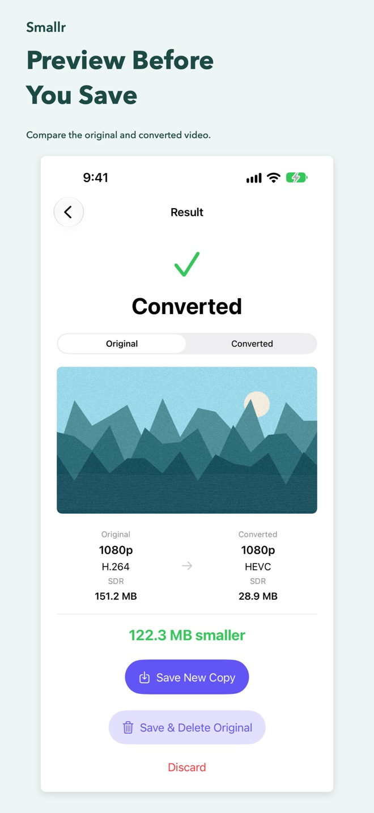

Smallr
Your videos hold memories, not just megabytes. Make smaller copies with on-device video conversion, and make room for your next moment.
For iPhone, iPad, and Mac. No account required.

Smaller videos. Your choice.
Find your largest videos
Browse your Photos library by size on iPhone and iPad, or choose a single video to convert.
Choose format and resolution
Choose HEVC or H.264 where supported. Keep the original resolution or reduce it to 1080p or 720p, with an estimated size before conversion.
Compare before saving
Switch between original and converted previews. Compare size, resolution, codec, and color profile before deciding what to keep.
Keep control of your originals
Save a new copy to Photos on iPhone and iPad, or export a file on Mac. Replacing a library video on iPhone or iPad always requires your confirmation.
Conversion runs locally. Videos stored in iCloud may need to be downloaded first. Available settings and actual file sizes depend on the source video. Spatial videos are not currently supported.